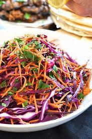

Napa Cabbage Salad

Ingredients
- 1 head napa cabbage
- 1 bunch minced green onions
- ⅓ cup butter
- 1 (3 ounce) package ramen noodles, broken
- 1 cup slivered almonds
- 2 tablespoons sesame seeds
- ¾ cup vegetable oil
- ½ cup white sugar
- ¼ cup cider vinegar
- 2 tablespoons soy sauce
Directions
- Gather the ingredients.
- Finely shred cabbage; do not chop. Combine green onions and cabbage in a large bowl. Cover and refrigerate until ready to serve.
- Preheat the oven to 350 degrees F (175 degrees C). Make the crunchy topping: Melt butter in a pot. Stir ramen noodles, almonds, and sesame seeds into the pot with melted butter.
- Spoon the mixture onto a baking sheet and bake the crunchies in the preheated oven, turning often to make sure they do not burn, for 5 to 7 minutes. When they are browned remove them from the oven.
- Make the dressing: Heat oil, sugar, vinegar, and soy sauce together in a small saucepan. Bring the dressing to a boil, let boil for 1 minute. Remove the pan from heat and let cool.
- Toss together cabbage with crunchy topping and dressing immediately before serving. Serve right away or the crunchies will get soggy.